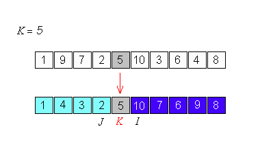
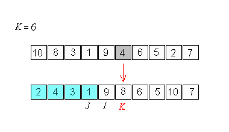
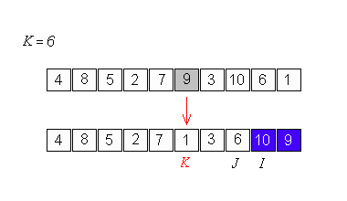
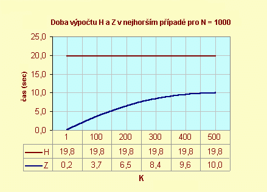
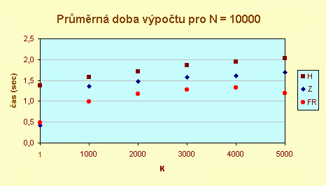
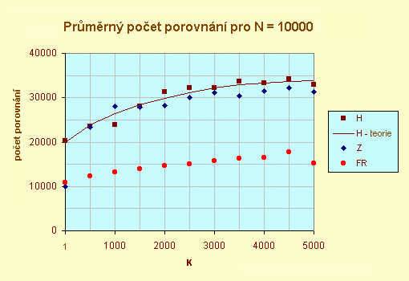
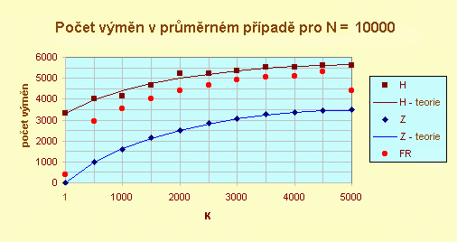
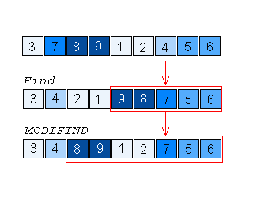
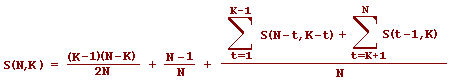

Studie porovnává tři algoritmy nalezení K-tého nejmenšího z N prvků: Hoarův FIND [1], moji modifikaci programu FIND [3]
(nazval jsem jej MODIFIND v Algorithms, Data Structures, and Problems Terms and Definitions
of the
CRC Dictionary of Computer Science, Engineering and
Technology, version February 4, 1999) a Floydův a Rivestův SELECT [4], [5].
Pro měření doby výpočtu, počtu porovnání a výměn prvků jsem využil implementace algoritmů v jazyce Rexx
(Quercus Systems' Personal REXX for Windows) na počítači PC s procesorem 6x86MX-PR233, 32MB RAM v
prostředí Windows 98.
Problém nalezení K-tého nejmenšího z N prvků definoval C. A. R. Hoare v [1] takto: Je dáno
pole A obsahující N navzájem různých prvků a celé čílo K, 1 <= K <=
N, má se určit K-tý nejmenší prvek A a pole se má přerovnat tak, aby prvek
A[K] výsledného pole byl K-tým nejmenším prvkem a všechny prvky s indexem menším než
K měly menší hodnotu a všechny prvky s indexem větším než K měly větší hodnotu.
Musí tedy platit:
A[1], A[2], ..., A[K-1] <= A[K] <= A[K+1], ...,
A[N]
Řešení tohoto problému můžeme využít v praxi pro nalezení mediánu nebo jiného kvantilu stejně jako pro
určení nejmenšího, největšího nebo druhého největšího atd. prvku. Přímočaré řešení - pole nejdříve
vytřídit - by mohlo být časově náročné při velkém počtu prvků. Rychlejší algoritmus publikoval poprvé
C. A. R. Hoare a nazval jej FIND. V této práci jej budu označovat jako H. Určí
K-tý nejmenší prvek v čase O(N.
Hoarův algoritmus je založen na zřejmém důsledku známé definice:
K-tý nejmenší z N prvků je ten prvek pole, který je menší než K - 1 jiných prvků ale větší než N - K prvků.
Prvek nemůže být K-tým nejmenším prvkem pole, je-li větší než K (a více) jiných
prvků nebo menší než N - K + 1 (a více) jiných prvků.
Při výpočtu vyjdeme z předpokladu, že
A[K] je K-tým nejmenším prvkem a pokusíme se to dokázat následujícím postupem:
Pole se prohlíží zleva (tj. zkoumají se prvky s indexy I = 1, 2, ...) až se nalezne
prvek A[I] >= A[K], pak se prohlíží pole zprava (tj. zkoumají se prvky s
indexy J = N, N - 1, ... ) až se nalezne prvek
A[J] <= A[K], oba prvky se vymění, v procesu zkoumání a výměn se pokračuje
tak dlouho, dokud se ukazatelé I a J nestřetnou. Pak může nastat jeden ze tří možných případů:
Tvrzení je dokázáno. K-tý nejmenší prvek je na
správném místě a program končí. Příklad:

Prvky
A[1] ... A[J] jsou menší než N - K + 1 jiných prvků,
přesně řečeno jsou menší než N - I + 1 >= N - K + 1 prvků, žádný z nich tedy
nemůže být K-tým nejmenším prvkem. Pokračovat ve výpočtu proto budeme hledáním prvku, který je
(K - I + 1)-ním nejmenším prvkem v poli A[I] ... A[N].
Příklad:

Prvky A[I] ... A[N] jsou větší než K jiných prvků, přesně řečeno
jsou větší než J >= K prvků. Žádný z nich tedy nemůže být K-tým nejmenším prvkem.
Pokračovat budeme v řešení úlohy redukovaného rozsahu: Nalézt K-tý nejmenší prvek pole
A[1] ... A[J].
Příklad:

H: procedure expose A. parse arg N, K L = 1; R = N do while L < R X = A.K; I = L; J = R do until I > J do while A.I < X; I = I + 1; end do while X < A.J; J = J - 1; end if I <= J then do W = A.I; A.I = A.J; A.J = W I = I + 1; J = J - 1 end end if J < K then L = I if K < I then R = J end return
Složitost algoritmu budeme posuzovat z počtu
porovnání, jako je A.I < X
a z počtu výměn W = A.I; A.I = A.J; A.J = W. Nechť
C(N, K) označuje počet porovnání a S(N, K) počet výměn nutných
při provádění programu H k nalezení K-tého nejmenšího z N prvků.
V nejhorším případě je:
Cmax(N, 1) =
Cmax(N, N) = (N2
+ 5N - 8) / 2
Cmax(N, K) = (N2 + 5N - 12) / 2,
for K = 2, 3, ..., N - 1
V [3] ukazuji příklady polí, které vedou k nejhoršímu případu
(prvek v K-té pozici je označen červeně):
for K = 1: N 2 1 3 ... N-1
for K = 2: 1 N 2 3 ... N-1
for K = 3: 3 2 N 1 4 5 ... N-1
for 3 < K < N-1: 2 ... K-2 K K-1 N 1 K+1 ... N-1
for K = N-1: 2 ... N-1 1 N
for K = N: 2 ... N-2 N N-1 1
C(N, K) = 2((N + 1)HN - (N - K + 3)HN - K + 1 - (K + 2)HK + N + 3)
HN = 1 + 1/2 + ... + 1/N
C(N, 1) = C(N,N) = 2N + o(N)
C(N, median)= 2N(1 + ln2) + o(N) = 3.39N + o(N)
S(N,
K) = (1 / 3)((N + 1)HN -
(N - K + 2.5)HN-K+1 - (K + 1.5)HK + N + 2)
S(N, 1) = S(N, N) =HN
S(N, median) = (1 / 3)((ln2 + 1)N - 3lnN) = 0.56N + o(N)
Uvažme pole 1, 10, 2, 3, 4, 5, 6, 7, 8, 9, a K = 2. Pole se rozdělí výše uvedeným postupem na dvě části A[1], ..., A[9] a
A[10]: 1, 9, 2, 3, 4, 5, 6, 7, 8, 10 pomocí jedné výměny a 12-ti porovnání. Zjistím-li však, že 10
je větší než dva prvky (1 a 9), pak už přece vím, že nemůže být druhým nejmenším prvkem, a další porovnání
jsou tedy zbytečná. Stejného výsledku (1, 9, 2, 3, 4, 5, 6, 7, 8, 10) dosáhnu jen s pomocí jedné výměny a
třech porovnání. A pak mohu hned přejít na řešení redukované úlohy najít v poli A[1], ..., A
[9] druhý nejmenší prvek. Modifikaci algoritmu H, pracující tímto způsobem, popisuje následující program Z.
Je překladem mého programu z [3] do jazyka Rexx.
Z: procedure expose A. parse arg N, K L = 1; R = N do while L < R X = A.K; I = L; J = R do until J < K | K < I do while A.I < X; I = I + 1; end do while X < A.J; J = J - 1; end W = A.I; A.I = A.J; A.J = W I = I + 1; J = J - 1 end if J < K then L = I if K < I then R = J end return return
Cmax(N, K) =
NK + N + K - K2 - 1, for
K = 1, 2, ..., N
U algoritmu Z maximální počet porovnání závisí na K. Následující graf ukazuje naměřenou dobu
výpočtu H a Z v nejhorším případě.

V [3] jsem uvedl jen odhady pro
průměrnou hodnotu C(N, 1), C(N, N)
a S(N, K):
C(N, 1) = C(N, N) = N + HN
S(N, K) = 0.5((N + 1)HN - (N - K)HN-K+1 - (K - 1)HK)
S(N, 1) = S(N, N) = lnN + o(N)
S(N, medián) = 0.5(Nln2 + 2lnN) + o(N) = 0.35N + o(N)
Ve svém článku Expected Time Bounds for Selection [4] R. W. Floyd a R. L. Rivest popsali nový, efektivní algoritmus. Počet porovnání je v průměrném případě roven N + min(K, N - K) + o(N). Následující program FR je mým překladem původního programu z [5] do jazyka Rexx.
FR: procedure expose A. parse arg L, R, K do while R > L if R - L > 600 then do N = R - L + 1; I = K - L + 1; Z = LN(N) S = TRUNC(0.5 * EXP(2 * Z / 3)) SD = TRUNC(0.5 * SQRT(Z * S * (N - S)/N) * SIGN(I - N/2)) LL = MAX(L, K - TRUNC(I * S / N) + SD) RR = MIN(R, K + TRUNC((N - I) * S / N) + SD) call FR LL, RR, K end T = A.K; I = L; J = R W = A.L; A.L = A.K; A.K = W if A.R > T then do; W = A.R; A.R = A.L; A.L = W; end do while I < J W = A.I; A.I = A.J; A.J = W I = I + 1; J = J - 1 do while A.I < T; I = I + 1; end do while A.J > T; J = J - 1; end end if A.L = T then do; W = A.L; A.L = A.J; A.J = W; end else do; J = J + 1; W = A.J; A.J = A.R; A.R = W; end if J <= K then L = J + 1 if K <= J then R = J - 1 end return
numeric digits 6. Proto jsem použil algoritmy známé
z učebnic:
EXP: procedure parse arg Tr; numeric digits 3; Sr = 1; X = Tr do R = 2 until Tr < 5E-3 Sr = Sr + Tr; Tr = Tr * X / R end return Sr SQRT: procedure parse arg X; numeric digits 3 if X < 0 then return -1 if X=0 then return 0 Y = 1 do until ABS(Yp - Y) <= 5E-3 Yp = Y; Y = (X / Yp + Yp) / 2 end return Y LN: procedure parse arg X; numeric digits 3 M = (X + 1) / (X - 1); Ln = 1 / M do J = 3 by 2 T = 1 / (J * M ** J) if T < 5E-3 then leave Ln = Ln + T end return 2 * Ln
numeric digits 3 a srovnáváme-li hodnotu právě vypočteného členu s hodnotou 5E-3. Pro určení
co nejmenšího počtu porovnání jsem ale jednoznačně nejlepší hodnoty těchto konstant nenašel. Někdy byla
nejúspěšnější volba konstant 3 a 5E-3, jindy 4 a 5E-3, jindy zase 5 a 5E-5 nebo 6 a 6E-6. Nakonec jsem
použill hodnoty 3 a 3E-5, s kterými byl výpočet zároveň nejrychlejší. Výsledek průměrného počtu porovnání
při nalezení mediánu, 1.5N v dále uvedeném grafu, ukazuje, že program FR s těmito hodnotami
pracuje podle očekávání.
Pro porovnání jsem použil program COMPARISON. Dále uvedený zjednodušený příklad tohoto programu měří jen
dobu výpočtu pro hodnoty K >= 500.
/* COMPARISON */ N = 10000 do K = 500 to 5000 by 500 TH = 0; TZ = 0; TFR = 0 do Trial = 1 to 100 call RANDARRAY; call INITIALIZE call TIME "R"; call H N, K; TH = TH + TIME("R") call INITIALIZE; call TIME "R"; call Z N, K TZ = TZ + TIME("R"); call INITIALIZE call time "R"; call FR 1, N, K TFR = TFR + TIME("R") end Trial say K TH/100 TZ/100 TFR/100 end K exit RANDARRAY: procedure expose B. N do J = 1 to N; B.J = RANDOM(1, 100000); end return INITIALIZE: procedure expose A. B. N do J = 1 to N; A.J = B.J; end return



Algoritmy Z a FR jsou vždy lepší než H; FR provede v průměru méně operací porovnání než Z; Z provede v průměru méně výměn než FR.
To je zajímavé. K přitažlivým vlastnostem algoritmu Z patří jeho jednoduchost. To není maličkost. Při výběru
algoritmu často srovnáváme jeho časovou složitost s dobou strávenou na jeho kódování a ladění. V každém
případě je hezké mít tyto algoritmy k dispozici on-line.
Richard Harter, cri@tiac.net, The Concord Research Institute
What is the difference between Mechanical Engineers and Civil Engineers?
Mechanical Engineers build weapons, Civil Engineers build targets.
1.. C. A. R. HOARE: Proof of a Program: FIND
CACM, Vol 14,
No. 1, January 1971, pp. 39-45
2. R. W. FLOYD, R. L. RIVEST: Expected Time Bounds for Selection. CACM,
March 1975, Vol. 18, No. 3, pp. 165-172
3.. R. W. FLOYD, R. L. RIVEST: Algorithm 489 The Algorithm SELECT - for Finding the i-th
Smallest of n Elements [M1] CACM, March 1975, Vol. 18, No. 3, p. 173
4. J. BENTLEY: Selection (in Programming Pearls), CACM, November 1985, Vol. 28, No. 11, pp. 1121-1127
5. V. ZABRODSKY: Variace na klasicke tema, Elektronika, No. 6 1992, p. 33-34
6. V. ZABRODSKY: Nalezeni k-teho nejmensiho prvku, Bajt, No. 8 1992, p. 130-131
7. D. E. KNUTH: The Art of Computer Programming. Sorting and Searching, Addison-Wesley, Reading, Mass., 1973
2. dubna 1999
jsem poslal do fóra comp.programming a comp.theory mail
Three Selection Algorithms:
Dobrý den,
mohli byste si přečíst můj článek FIND, SELECT, MODIFIND?
Abstrakt:
Porovnávací studie tří algoritmů pro nalezení K-tého nejmenšího z N prvků:
Hoarova FINDu (H algoritmus);
mé modifikace FINDu (Z algoritmus);
Floydova a Rivestova SELECTu (FR algoritmus).
Závěr:
Algorithmy Z a FR jsou vždy lepší než H; FR provádí v průměru menší počet porovnání než Z;
Z provádí menší počet výměn než FR. Když počet výměn není kritický, je lepší FR než Z -
a naopak.
Paul E. Black mi napsal 6 dubna 1999:
Vážený dr. Zábrodský:
Četl jsem váš mail v comp.theory a váš článek "FIND, SELECT, MODIFIND" na mě udělal velký dojem. Byl jsem
zvolen redaktorem Nového slovníku informatiky pro oblast algoritmy, datové struktury a problémy
(Algorithms, Data Structures, and Problems of the new CRC Dictionary of Computer Science, Engineering and
Technology).
Chtěl bych, aby tento sajt byl online referencí pro všechny, kdo se informatikou zabývají.
Hledám lidi, kteří by mi pomohli přidat hesla a definice do slovníku nebo je alespoň zkontrolovat.
Mohl byste přispět?
S úctou,
-paul-
--
Paul E. Black
Odepsal jsem mu 12 dubna 1999:
Vážený dr. Blacku,
Mohu vám nabídnout:
1) Stručnou definici problému nalezení k-tého prvku:
Je dáno pole A obsahující N prvků a kladné celé číslo K <= N,
určete K-tý nejmenší prvek pole A a přerovnejte prvky pole tak, aby platilo:
A[1], A[2], ..., A[K-1] <= A[K] <= A[K+1], ..., A[N]
2) Implementaci N. Wirtha Hoarova FINDu v Pascalu (pro celočíselné pole X).
procedure FIND(K:integer); var I,J,L,R,W,X:integer; begin L:=1; R:=N; while L<R do begin X:=A[K]; I:=L; J:=R; repeat while A[I]<X do I:=I+1; while X<A[J] do J:=J-1; if I<=J then begin W:=A[I]; A[I]:=A[J]; A[J]:=W; I:=I+1; J:=J-1 end until I>J; if J<K then L:=I; if K<I then R:=J end end
procedure MODIFIND(K:integer); var I,J,L,R,W,X:integer; begin L:=1; R:=N; while L<R do begin X:=A[K]; I:=L; J:=R; repeat while A[I]<X do I:=I+1; while X<A[J] do J:=J-1; W:=A[I]; A[I]:=A[J]; A[J]:=W; I:=I+1; J:=J-1 until (J<K) or (K<I); if J<K then L:=I; if K<I then R:=J end end
S podivným chováním algoritmu FIND jsem se setkal poprvé v červnu roku 1989. Eliminoval jsem je jednoduchou úpravou algoritmu FIND. První program jsem napsal v Rexxu (měl 30 řádek), ale další průzkum jsem už prováděl pouze s implementací v Pascalu. V průběhu podzimu 1990 jsem napsal svůj článek Nalezení K-tého nejmenšího z N prvků, s pascalovskými verzemi programů, a poslal jsem jej do časopisu Bajt. Nebyl však ani po roce uveřejněn. Přepracoval jsem jej (rozšířil o nejhorší případ) a se svolením redakce časopisu Bajt jsem jej zaslal do časopisu Elektronika. V něm totiž od října 1991 vyšly už dva nebo tři příspěvky čtenářů právě na toto téma. Novou verzi článku jsem nazval Variace na klasické téma. Publikována byla v červnu, v 6. čísle za rok 1992. Ale v prosinci téhož roku, v 8. čísle Bajtu, vyšla překvapivě i moje původní verze. V obou článcích jsem Hoarův FIND nazýval P1 (zkratka první procedura v Pascalu) a moji modifikaci P2 (odolal jsem pokušení nazvat ji QUICKFIND). V mých poznámkách (tři školní sešity formátu A4, každý s 40-ti listy) označuji svůj algoritmus několikrát jako Fnd. V internetové (a Rexxové) verzi je prostě Z (Find je tam H a Select FR). Ovšem Z se mi nezdálo vhodné jméno pro slovník dr. Blacka a tak jsem ve svém mailu použil název MODIFIND ...
Pro průměrný počet výměn u algoritmu MODIFIND uvádím odhad:
S(N, K) = 0.5((N + 1)HN - (N - K)HN-K+1 - (K - 1)HK)
Při výpočtu tohoto vzorce jsem postupoval stejně jako D. E. Knuth ve cvičeních 5.2.22 a dalších v [7].
Jak to, že jsem ale mohl použít stejný postup, když MODIFIND se chová jinak než Find? Podívejme se na
následující příklad.

((K - 1) (N - K) / 2N) + (N - 1) / N

C. A. R. Hoare v [1] napsal:
Účelem programu Find je nalézt prvek pole A[1:N], jehož
hodnota je podle velikosti f-tá v pořadí a přerovnat pole tak, aby tato hodnota
byla v A[f] a dále, aby platilo, že všechny prvky s nižším
indexem než f mají menší hodnotu a všechny prvky s vyšším indexem mají vyšší
hoddnotu. Po skončení programu musí platit:
A[1], A[2], ... , A[f - 1] <= A[f] <= A[f + 1], ... , A[N]
V [2] R. W. Floyd a R. L. Rivest uvádí:
Problém výběru
může být stručně definován takto: je dána množina X of n různých čísel a celé číslo
i, 1 <= i <= n, , má se určit i-tý nejmenší prvek
X s co nejmenším možným počtem porovnání. Přitom i-tý nejmenší prvek, označme ho i_o_X, je
takový prvek, který je větší než přesně i - 1 jiných prvků, takže 1_o_X je nejmenší a
n_o_X největší prvek v X.
V [3] R. W. Floyd a R. L. Rivest napsali:
SELECT přerovná hodnoty prvků v segmentu
pole X[L : R] tak, že X[K] (pro dané K; L <= K <= R) bude obsahovat (K - L + 1)
nejmenší hodnotu, z L <= I <= K vyplývá X[I] <= X[K], a z K <= I <= R vyplývá X[I] >= X[K].
J.Bentley popsal problém nalezení K-tého nejmenšího prvku v článku [4] takto:
Vstupem pro program SELECT
je kladné celé číslo N, pole X[1 .. N], a kladné celé číslo K <= N. Program musí přerovnat prvky tak, aby
platilo X[1 .. K - 1] <= X[K] <= X[K + 1 .. N]. Pak bude K-tý nejmenší prvek na pravém místě X[K].
Tento můj článek (FIND, SELECT, MODIFIND) obsahuje definici (cituji):
Problém nalezení K-tého nejmenšího z N prvků definoval C. A. R. Hoare v [1] takto: Je dáno pole A
obsahující N navzájem různých prvků a celé čílo K, 1 <= K <= N, má se určit K-tý nejmenší prvek A a pole se
má přerovnat tak, aby prvek A[K] výsledného pole byl K-tým nejmenším prvkem a všechny prvky s indexem
menším než K měly menší hodnotu a všechny prvky s indexem větším než
K měly větší hodnotu. Musí tedy
platit:
A[1], A[2], ..., A[K - 1] <= A[K] <= A[K + 1], ..., A[N]
Nejstručnější definice, která zohledňuje všechny dříve uvedené, zní:
Je dáno pole A obsahující N prvků a kladné celé číslo K <= N, určete K-tý nejmenší prvek pole A a
přerovnejte prvky pole tak, aby platilo:
A[1], A[2], ..., A[K - 1] <= A[K] <= A[K + 1], ..., A[N]
1. C. A. R. HOARE: Proof of a Program: FIND
CACM, Vol 14,
No. 1, January 1971, pp. 39-45
2. R. W. FLOYD, R. L. RIVEST: Expected Time Bounds for Selection. CACM, March 1975, Vol. 18, No. 3, pp. 165-172
3. R. W. FLOYD, R. L. RIVEST: Algorithm 489 The Algorithm SELECT - for Finding the i-th
Smallest of n Elements [M1] CACM, March 1975, Vol. 18, No. 3, p. 173
4. J. BENTLEY: Selection (in Programming Pearls), CACM, November 1985, Vol. 28, No. 11, pp. 1121-1127
5. V. ZABRODSKY: Variace na klasicke tema, Elektronika, No. 6 1992, p. 33-34
6. V. ZABRODSKY: Nalezeni k-teho nejmensiho prvku, Bajt, No. 8 1992, p. 130-131
7. D. E. KNUTH: The Art of Computer Programming. Sorting and Searching, Addison-Wesley, Reading, Mass., 1973
aktualizováno 15. srpna 2021 Copyright © 1998-2021 Vladimír Zábrodský, Blansko
zabrodsky(DOT)v(AT)seznam(DOT)cz